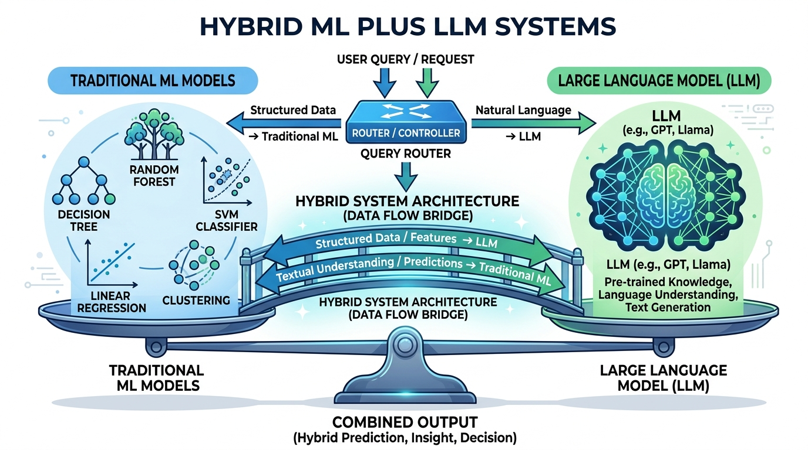

"The art of engineering is not choosing the most powerful tool, but choosing the right tool for each part of the problem."
Deploy AI Agent

Chapter Overview
In production systems, LLMs rarely work in isolation. The most effective architectures combine large language models with classical machine learning, rules engines, and traditional software in carefully designed pipelines. The challenge is knowing when to use an LLM, when a simpler model will do, and how to orchestrate both into a system that maximizes quality while minimizing cost and latency. These decisions become central to strategic planning and ROI analysis for any AI initiative.
This module provides a principled decision framework for choosing between LLMs and classical ML. It covers patterns for using LLMs as feature extractors, building hybrid triage and escalation pipelines, optimizing total cost of ownership, and extracting structured information from unstructured text. These hybrid patterns complement the retrieval techniques covered in Chapter 19 on RAG and the end-to-end application architectures explored later in the book. Each pattern is grounded in real production scenarios with concrete benchmarks, code examples, and cost analyses.
By the end of this module, you will be able to evaluate any ML task against a rigorous decision matrix, design hybrid architectures that route work to the right model at the right cost, and build production information extraction pipelines that combine classical NLP with LLM capabilities. You will also learn how to evaluate these systems to ensure they meet quality targets.
Learning Objectives
- Apply a structured decision framework to determine when an LLM is appropriate versus classical ML, rule-based systems, or hybrid approaches
- Calculate per-query cost at scale for different model tiers (building on LLM API pricing) and identify breakeven points between API and self-hosted inference
- Use LLM-generated embeddings as features in classical ML pipelines and evaluate their impact on downstream accuracy
- Design hybrid architectures including classical triage with LLM escalation, confidence-based routing, and ensemble voting
- Build cascading model systems that route queries from small to large models based on complexity signals
- Perform total cost of ownership analysis across API costs, infrastructure, engineering time, and maintenance, informing build vs. buy strategy decisions
- Construct a quality-cost Pareto frontier and select optimal operating points for production deployments
- Build information extraction pipelines combining spaCy NER with LLM-based relation extraction and structured output enforcement using BAML and Instructor
Prerequisites
- Chapter 09: LLM APIs and Tooling (API usage, structured outputs, function calling)
- Chapter 10: Prompt Engineering (few-shot prompting, output formatting)
- Chapter 08: Inference Optimization (quantization, serving infrastructure, latency concepts)
- Familiarity with classical ML concepts: logistic regression, XGBoost, TF-IDF, embeddings
- Python, scikit-learn, and basic NLP library experience (spaCy or similar)
Sections
- 11.1 When to Use LLM vs. Classical ML 🟡 ⚙️ 🔧 The LLM decision framework: accuracy vs. latency vs. cost vs. interpretability. Classification benchmarks (TF-IDF+LR vs. GPT-4), tabular prediction, regex vs. LLM, and per-query cost modeling at scale.
- 11.2 LLM as Feature Extractor 🟡 ⚙️ 🔧 Using LLM embeddings as features for classical models, LLM-powered feature engineering for structured data, generating text descriptions to enrich sparse features, and benchmarking embedding-based pipelines.
- 11.3 Hybrid Pipeline Patterns 🔴 ⚙️ 🔧 Classical triage with LLM escalation, ensemble voting, cascading model architectures, confidence-based routing, and building a customer support pipeline with classifier, LLM extractor, and rules engine.
- 11.4 Cost-Performance Optimization at Scale 🔴 ⚙️ 🔧 Total Cost of Ownership modeling, LLM cost optimization patterns (prompt caching, semantic caching, model routing), latency budgets, quality-cost Pareto frontier, and build vs. buy breakeven analysis.
- 11.5 Structured Information Extraction 🟡 ⚙️ 🔧 NER, relation extraction, and event extraction with LLMs. Classical IE pipelines (spaCy, CRF) vs. LLM-based extraction. Structured output with BAML, Instructor, and Pydantic. Hybrid IE patterns and production deployment.
What's Next?
In the next section, Section 11.1: When to Use LLM vs. Classical ML, we tackle the fundamental decision of when to use LLMs versus classical ML, with frameworks for making the right choice.